Restoran sitesi, 9 Kasım 2026
Solda bugün gördüğümüz küçük bir restoran sitesi, ortada eski Kehribar demomuz, sağda aynı içerikle yeniden yaptığımız Kehribar. Üç site de aynı ekran boyutlarında (masaüstü 1440 piksel, telefon 390 piksel) ve aynı ölçüm düzeneğinde ele alındı.
Konsept. Kehribar kurgusal bir bardır; yemekler, fiyatlar, adres, telefon ve saatler örnektir. Soldaki restoran gerçek bir işletmedir ve yalnızca ölçüt olarak, bugünkü halinin ekran görüntüsüyle gösterilir; kendileriyle bir bağlantımız yoktur ve sitelerine dokunulmamıştır.
İlk ekran, yani ziyaretçinin kaydırmadan gördüğü şey. Telefon görüntüleri canlıdır: "Canlı dene" ile gerçek sayfayı o boyutta kaydırıp dokunabilirsiniz.
Masaüstü, 1440 piksel
Karanlık tema, birden fazla düğme yarışıyor; ilk ekranda saat ve adres yok.
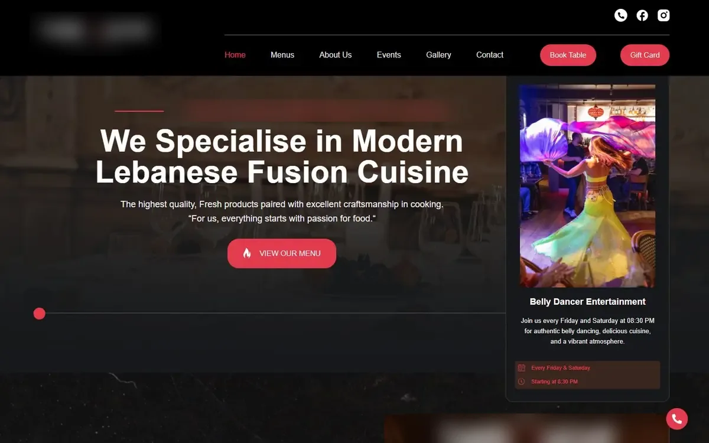
3 boyutlu bardak ve kısa bir başlık; telefon, adres, saat ve harita yok.
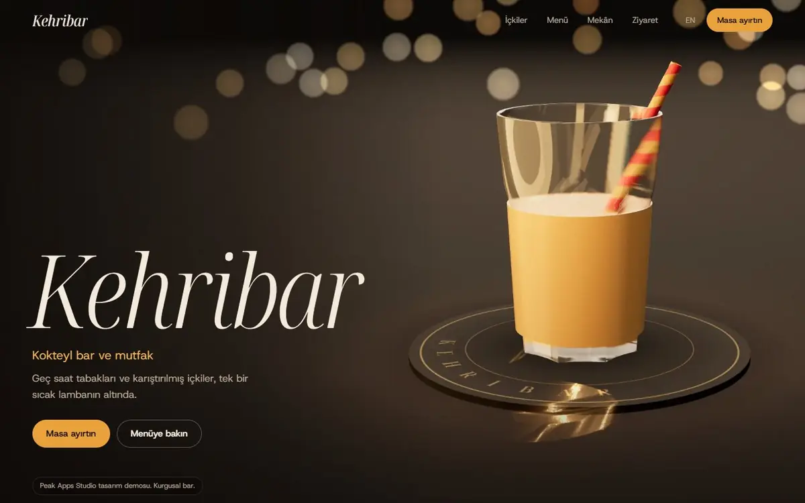
Gerçek barmen videosu, canlı "şimdi açık" durumu, saat, adres ve telefon ilk ekranda.
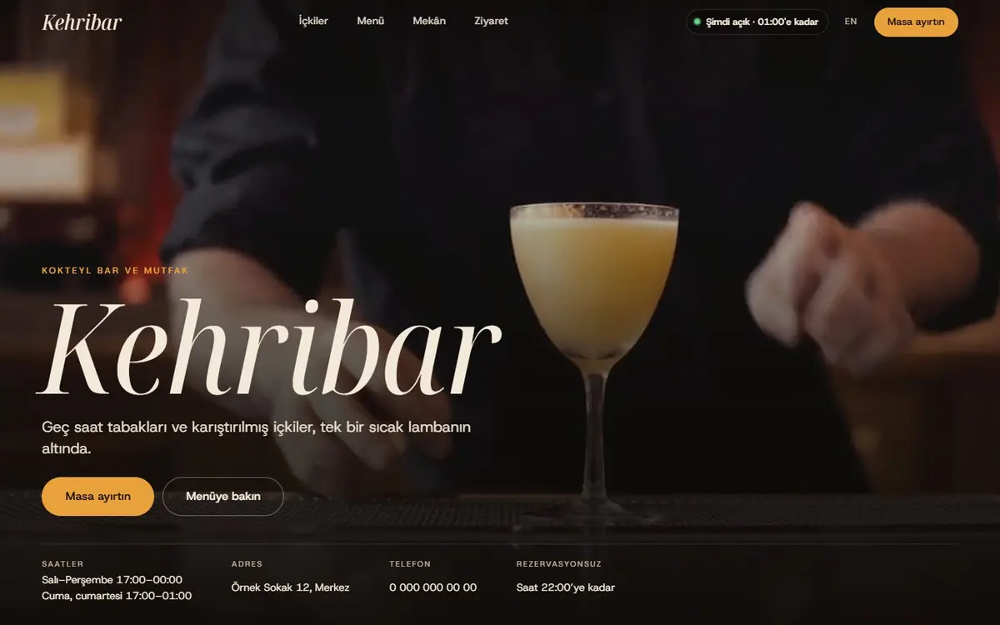
Telefon, 390 piksel
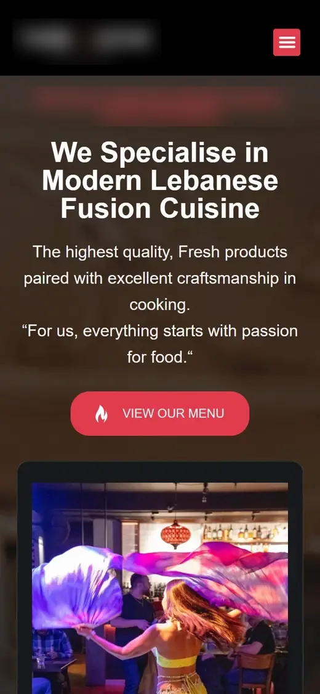
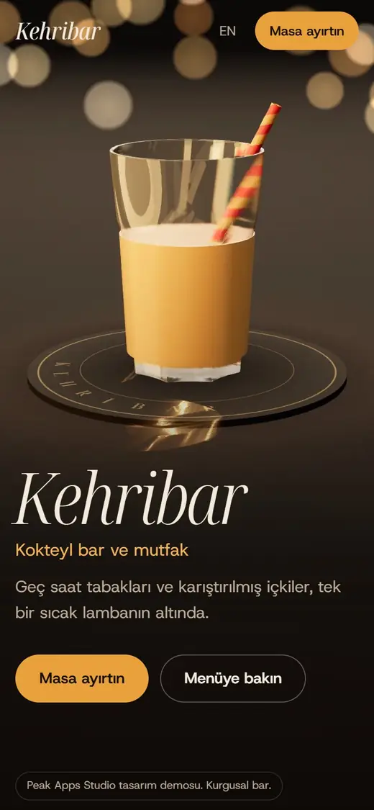
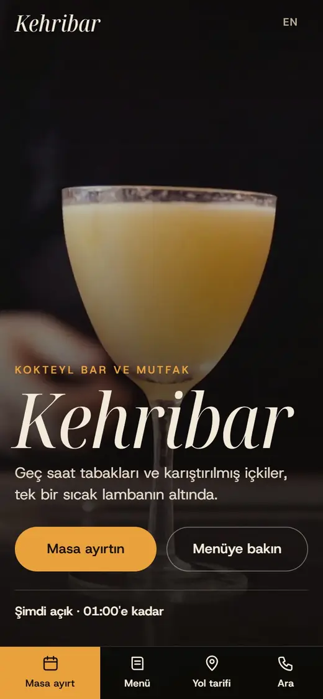
Hepsi ölçüldü, yorum değil. Üç sütun: bugünkü küçük restoran, eski Kehribar, yeni Kehribar.
| Küçük restoran (bugün) | Eski Kehribar | Yeni Kehribar | |
|---|---|---|---|
| Telefonda ilk ekranda görünenler | |||
| Menü düğmesi | var | var | var |
| Masa ayırt düğmesi | yok | var | var |
| Telefon numarası (dokununca arar) | var (kayan düğme) | yok | var |
| Yol tarifi | yok | yok | var |
| Şimdi açık / kapalı | yok | yok | var |
| Çalışma saatleri | yok | yok | var |
| Dokunuş sayısı | |||
| Menüye | 1 | 1 | 1 |
| Masa ayırtmaya | 2 (önce menü açılır) | 1 | 1 |
| Aramaya | 1 | yok | 1 |
| Yol tarifine | yok | yok | 1 |
| İçerik | |||
| Rezervasyon formunda ad ve telefon | - | yok | var |
| Gerçek yemek ve içki fotoğrafı | - | 0 (3 boyutlu bardak) | 24 adet (menüde her yemeğe bir tane) |
| Hareketli görüntü | - | 3 boyutlu sahne | gerçek barmen videosu (yalnız geniş ekranda) |
| Arama motoru için yapılandırılmış veri | var | yok | var |
| Hız (telefon: yavaş 4G, 4 kat yavaş işlemci) | |||
| İlk yükleme boyutu | 2,3 MB | 144 KB | 364 KB |
| En büyük öğe görünene kadar (LCP) | 12,6 sn | 0,8 sn | 1,2 sn |
| Düzen kayması (CLS, 0,1 altı iyi) | 0,000 | 0,000 | 0,000 |
| Hız (masaüstü, ağ sınırı yok) | |||
| İlk yükleme boyutu | 3,5 MB | 154 KB | 1,1 MB (video dahil) |
| En büyük öğe görünene kadar (LCP) | 8,2 sn (canlı site) | 0,2 sn (yerel) | 0,2 sn (yerel) |
Dünyanın en çok ziyaret alan restoran sitelerine (Chipotle, Shake Shack, Sweetgreen, Wagamama, Dishoom, Eleven Madison Park) ve ödüllü örneklere bakıp küçük bir restoranın sitesinde işe yarayanları aldık.
İlk ekranın altında ziyaretçiyi karşılayanlar: menü, mekân ve rezervasyon. Hepsi yeni sürümden masaüstü görüntüsü.
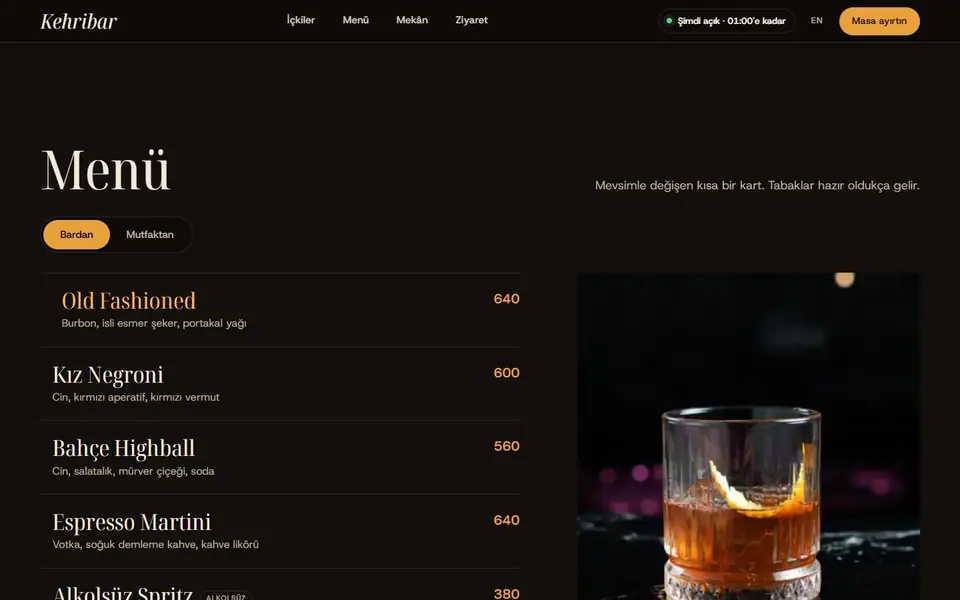
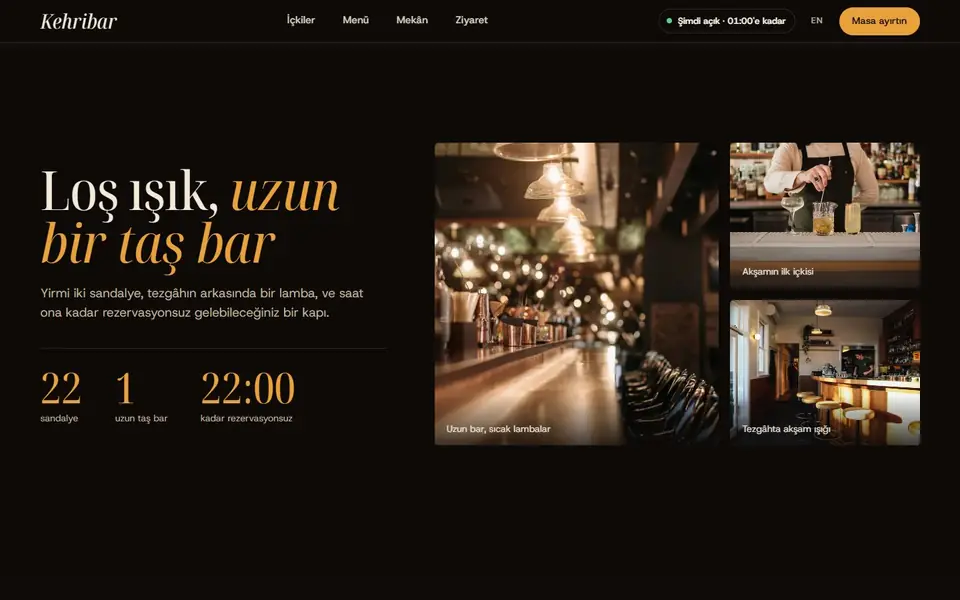
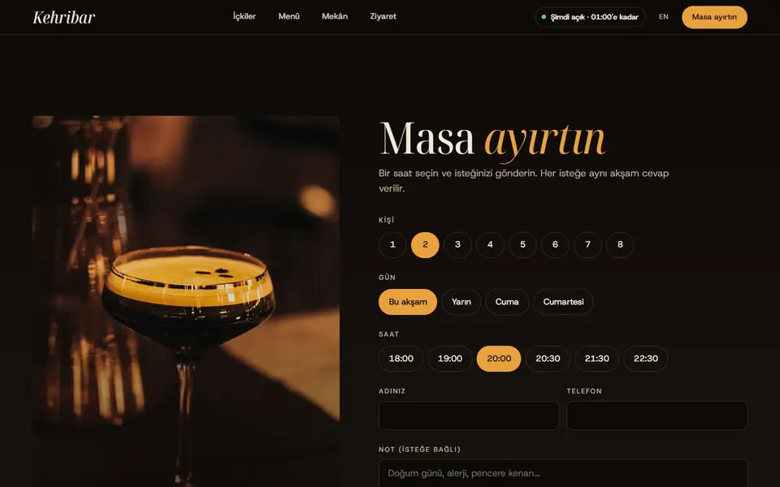
Trafik sıralaması (Similarweb ücretsiz sayfaları, Eylül 2026, tahmin): Domino's #945, Chipotle #4.410, Shake Shack #19.703, Nando's #23.504, Sweetgreen #37.773, Wagamama #43.046, In-N-Out #90.220, Dishoom #96.940, Katz's #156.016, Noma #379.982, Eleven Madison Park #486.656 (küresel sıra, küçük sayı daha çok trafik). Aşağıdakiler yalnızca karşılaştırma amaçlı ekran görüntüleridir.
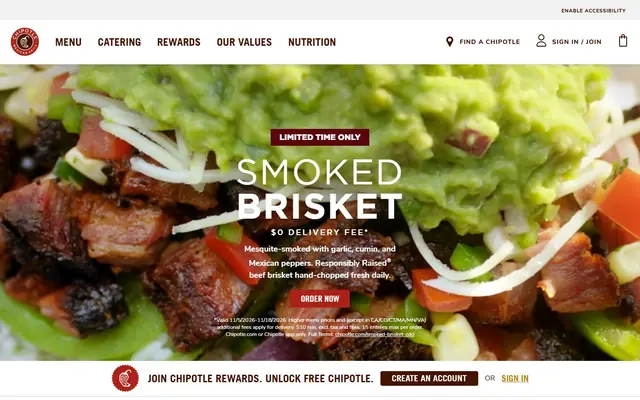
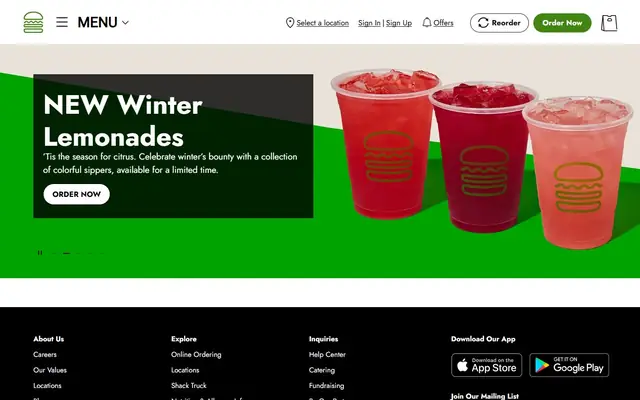
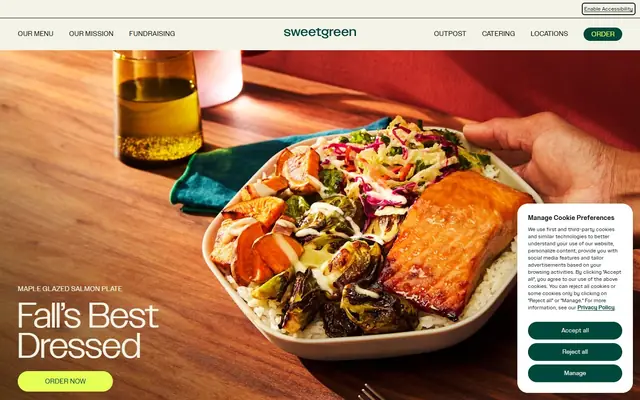
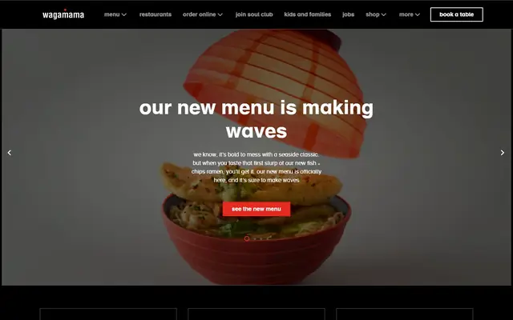
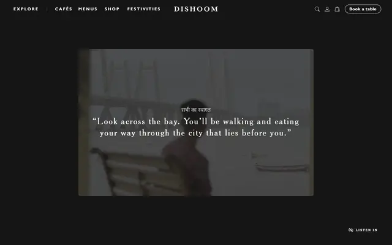
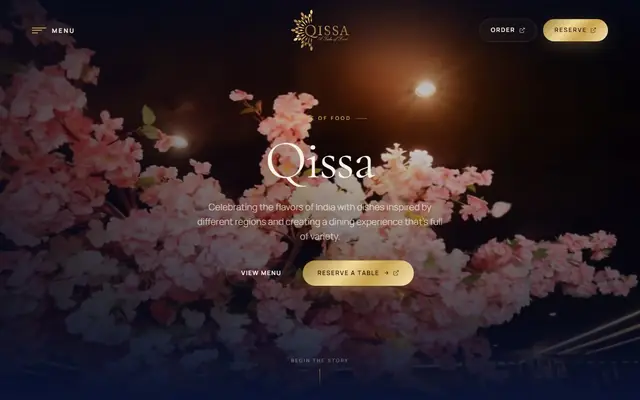